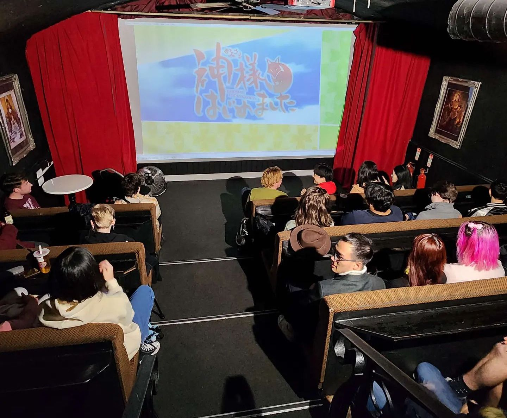

The Anime and Animation Society is an appreciation society for all Japanese (and inspired) media, primarily anime. We want to provide a warm community and a chill space with relaxing and out-there anime. With weekly Anime Screenings and Manga Meet-Ups, we hope to give you a good variety of shows to explore and an opportunity to make new friends and discover all things anime and manga! Now featuring Animation Events!
Note: The student association allows us to include students from outside Edinburgh University, so please feel free to come along if you are studying elsewhere.
WHAT WE DO
During semester, we will be meeting for weekly Anime Screenings on Friday evenings on campus. In addition to our regular screenings, we also run a range of other activities throughout the year. In the past, we've done everything from bowling to ice skating to karaoke to bubble tea mixing!
Our weekly events are free and open to non-members. However, we greatly appreciate financial support from those who pay the £3 membership fee, and some of our irregular events may only be free for members. If you would like to join, you can buy a permanent membership from our EUSA page.
Please follow our Instagram and Bluesky pages for regular updates.
UPCOMING EVENTS

TIER LIST EVENT
WEDNESDAY 1ST OCTOBER 17:00-19:00
Ranking your tastes in Anime openings! Submit an opening here!
Event Location: Davidson Lecture Theatre, Lister LTC
ANIME SCREENING
THURSDAY 2ND OCTOBER 18:00-20:00
Come along for the final episodes of Bocchi the Rock 8-12! Followed by a social of course!
Event Location: Lecture Theatre A, 40 George Square
ANISOC SOCIAL
SATURDAY 4TH OCTOBER 14:00-16:00
As we had to cancel our animation event this week, in its place we will instead be holding a social! Board games and drawing supplies will be provided, but also feel free to bring any other activities you'd like to do with others!
Event Location: Student Lounge, Potterow
CURRENT SCREENINGS
Episode screenings this Semester will be taking place in LG.09, 40 George Square at 18:00 every Friday (With some exceptions).
This semester we will be screening Bocchi The Rock!, Sonny Boy, Kaguya Sama: Love is War and Serial Experiments Lain!
In the mean time, feel free to visit the archive to see our previously screened shows.
FREQUENTLY ASKED QUESTIONS
Q: Do I need to sign up for screenings?
A: No, you do not need to buy a membership or sign up for any of our regular events.
Q: Can we chat during the anime?
A: The screenings are fairly casual. There wouldn't be much point to watching anime together if we outlawed jokes and discussion.
Q: Do I have to stay for the full screening?
A: No! Feel free leave whenever you want. For example, some people head home after watching the first couple of anime.
Q: Why are you called the Anime and Animation society?
A: It's just always been called that. We screened Arcane once.
Q: How old are you?
A: As far as we can tell, AASOC had its debut in September of 1999, making us younger than Eva, but older than the legal drinking age.
FRIENDS
In Edinburgh, the Napier University Anime Society and the Heriot Watt Anime Society both hold weekly screenings on different days from us. The UoE Fleshmarket Film Society have also been known to screen pseudy anime films, sometimes in collaboration with us.